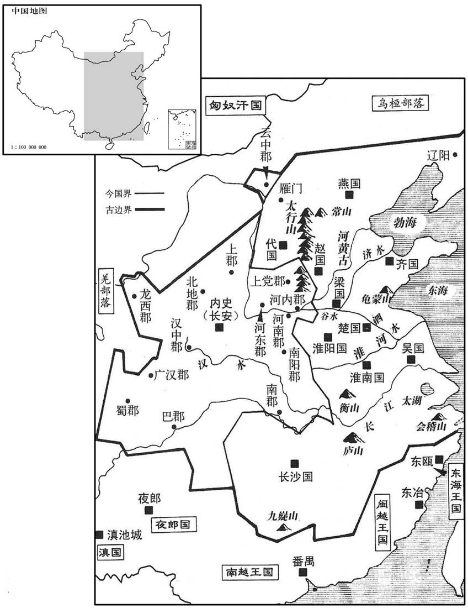
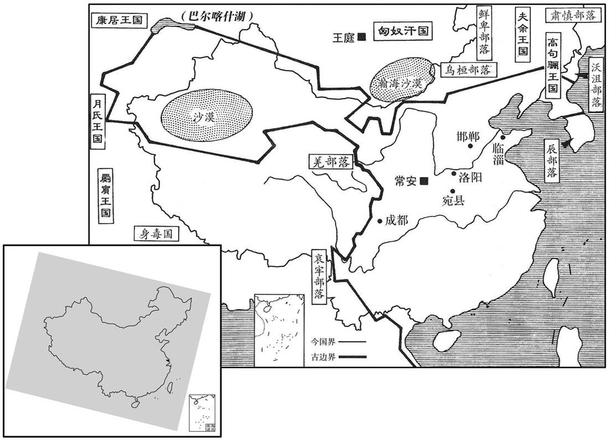
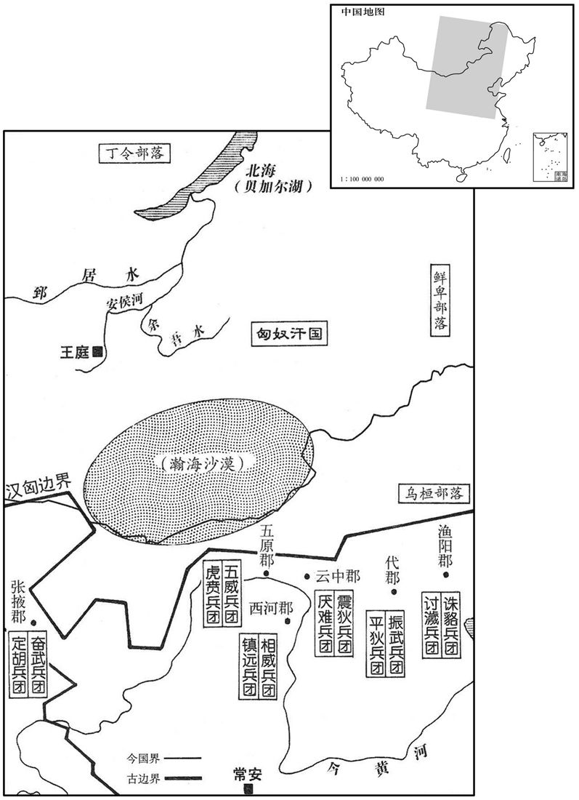
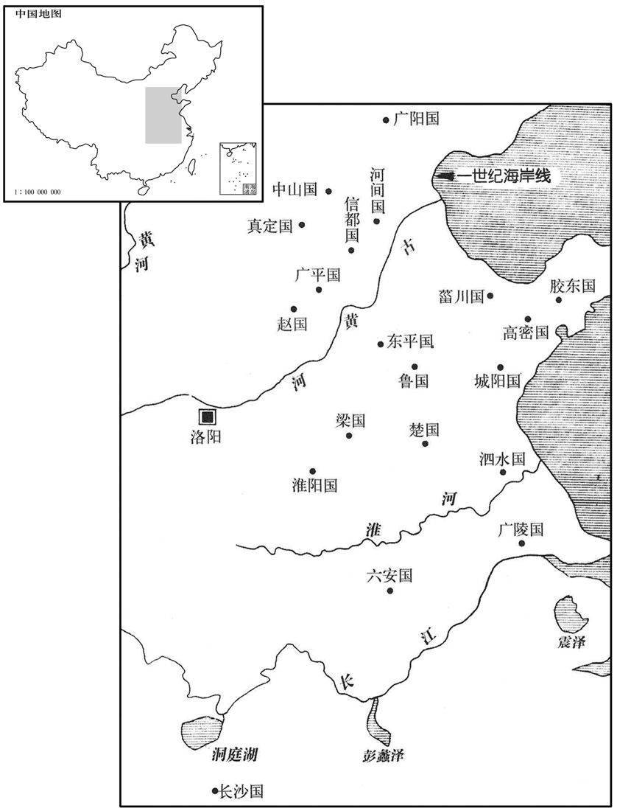

公元10年资治通鉴：本年记事、原文与白话对照
按原书编年位置阅读；追叙和史论不等于本年发生的事件。白话采用所据译本，缺译不以生成译文补齐。
卷37 · 本年记事
公元10年 · 汉孝平皇帝始建国二年
二年〔（庚午、一○）〕
上传原文的注释括号有异常，字符原样保留；无法可靠划分的段落默认全文显示。
本年事件索引（现代整理）
- 王莽大赦天下
- 汉诸侯王尽交玺绶降为庶民，献符命者获封侯
- 班固论周代分封诸侯巩固国本，王莽篡汉却无藩屏
- 班固回顾汉初封王、削藩之变，指出外戚得以篡权缘于宗室衰弱
- 王莽设五均官与赊贷，试图抑制兼并、平抑物价
- 王莽按周礼征收田宅与百业税，扰乱民生
- 王莽垄断酒类买卖，并禁民间持弩铠
- 乌桓拒缴匈奴税赋，匈奴攻掠其部众
- 王骏等赴匈奴颁授新印，强令单于交回汉印
- 匈奴要求恢复旧印，王骏等以新朝制度搪塞
- 匈奴因王莽改印、征索乌桓而与汉边境冲突加剧
- 戊己校尉属官杀死校尉，率两千余人投降匈奴
- 王莽借刘子舆谣言废除刘氏宗庙，并令刘氏改姓王
- 王莽改称定安太后为黄皇室主，意图切断其与汉室关系
- 十二月打雷
- 王莽改称匈奴单于为“降奴服于”，大举征兵准备北伐
- 王莽大改钱币制度并严惩持用五铢钱者，百姓破产受刑
- 王莽惩治未奉符命的造谣者，禁止民间伪造天命
- 王莽借符命逼甄丰等旧日亲信，甄氏父子因而覆灭
- 王莽兴建八风台、种五粱禾，沉迷神仙方术

本年形势与背景参考图

本年形势与背景参考图

本年形势与背景参考图

本年形势与背景参考图
春，二月，赦天下。
春季，二月，大赦天下。
五威将帅七十二人还奏事，汉诸侯王为公者悉上玺绶为民，〔上，时掌翻。〕无违命者。独故广阳王嘉以献符命，〔广阳王嘉，燕王旦之玄孙。〕鲁王闵以献神书，中山王成都以献书言莽德，皆封列侯。
五威将帅七十二人回来奏报，汉朝的诸侯王去掉王号改称为公的，全部缴上印信成为平民，没有违抗命令的。只有原广阳王刘嘉因向王莽呈献符命，鲁王刘闵因向王莽呈献神书，中山王刘成都因向王莽呈书歌颂功德，都封为列侯。
班固论曰：昔周封国八百，同姓五十有余，所以亲亲贤贤，关诸盛衰，深根固本，为不可拔者也。故盛则周、召相其治，致刑错；〔相，息亮翻。治，直吏翻。错，千故翻。〕衰则五伯扶其弱，与共守；〔师古曰：伯，读曰霸。此五霸，谓齐桓、宋襄、奏穆、晋文、吴子夫差也。〕天下谓之共主，〔如淳曰：虽至微弱，犹共以之为主。〕强大弗之敢倾。〔师古曰：言诸侯虽强大，不敢倾灭周也。〕历载八百余年，数极德尽，降为庶人，用天年终。〔谓赧王也。〕奏讪笑三代，窃自号为皇帝，而子弟为匹夫，内无骨肉本根之辅，外无尺土藩翼之卫；陈、吴奋其白梃，〔应劭曰：白梃，大杖也。孟子曰：可使制梃以挞秦、楚，是也。师古曰：梃，音徒鼎翻。〕刘、项随而毙之。故曰，周过其历，秦不及期，国势然也。〔应劭曰：武王克商，卜世三十，卜年七百；今乃三十六世，八百六十七年，此谓过其历者也。秦以谥法少，恐后世相袭，自称始皇帝，子曰二世，欲以一迄万；今至子而亡，此之谓不及期也。〕
班固论曰：从前，周王朝分封诸侯国八百个，其中同姓家族有五十余个。这正是为了友爱亲属，尊重贤才，它关系到政权的兴衰。根深植，本坚固，使外人就无法动摇。所以强盛之时，周公、召公共同治理，使刑罚停止。哀弱之时，五霸在下扶助，共同守护。天下认为周王是共主，诸侯国的力量再强大，也不敢倾灭周。历时八百余年，气数恩德已尽，被降为平民，但仍终其天年。秦讥笑夏商周三代君王，自称“皇帝”，却让子弟当平民。这个政权内没有骨肉至亲辅佐，外没有藩属封国护卫，一旦陈胜、吴广揭竿而起，刘邦、项羽随之而进，也就覆亡了。所以说，周王朝的统治能够超过期限，秦王朝则短到没有达到期限，是国家形势造成了这样的结局。
汉兴之初，惩戒亡秦孤立之败，于是尊王子弟，〔王，于况翻。〕大启九国。自鴈门以东尽辽阳，为燕、代；〔师古曰：辽阳，辽水之阳也。〕常山以南，太行左转，渡河、济，渐于海，为齐、赵；〔师古曰：太行，山名也。左转，亦谓自太行而东也。渐，入也，一曰：浸也。济，子礼翻。渐，音子廉翻，亦读如字。〕谷、泗以往，奄有龟、蒙，为梁、楚；〔晋灼曰：水经云：泗水出鲁国卞县。臣瓒曰：谷，在彭城，泗之下流为谷水。师古曰：奄，覆也。龟、蒙，二山名。〕东带江、湖，薄会稽，为荆、吴；〔文颖曰：即今吴也。高祖六年为荆国，十六年更名吴。师古曰：荆、吴同是一国。薄，伯各翻。会，工外翻。〕北界淮濒，略庐、衡，为淮南；〔师古曰：濒，水箧也。庐、衡，二山名。〕波汉之阳，亘九嶷，为长沙。〔郑氏曰：波，音陂泽之陂。孟康曰：亘，竟也；音古赠翻。师古曰：波汉之阳者，循汉水而往也。水北曰阳。波，音彼皮翻，又音彼义翻。九嶷，山名，有九峰，在零陵营道。嶷，音疑。〕诸侯比境，周匝三垂，外接胡、越。〔师古曰：比，谓相次也。三垂，谓东、北、南也。比，音频寐翻，接连也。〕天子自有三河、东郡、颍川、南阳，自江陵以西至巴、蜀，北自云中至陇西，与京师、内史，凡十五郡；公主、列侯颇邑其中。〔师古曰：十五郡中，又往往有列侯、公主之邑。〕而藩国大者夸州兼郡，连城数十，宫室、百官同制京师，可谓矫枉过其正矣。〔师古曰：夸，音跨。枉，曲也。正曲曰矫，言矫秦孤立之败而大封子弟，过于强盛，以至失其中也。〕虽然，高祖创业，日不暇给，孝惠享国又浅，高后女主摄位，而海内晏如，亡狂狡之忧，卒折诸吕之难，〔亡，古无字通。卒，子恤翻。难，乃旦翻；下同。〕成太宗之业者，亦赖之于诸侯也。
汉朝建立的初期，警觉到秦王朝覆亡的原因，是皇族的孤立，所以大封皇族子弟为王，建立九个封国。从雁门郡以东到辽阳，是燕国、代国。常山以南，太行山以东，渡过黄河、济水，直到大海，是齐国、赵国。水、泗水以南，龟山、蒙山一带，是梁国、楚国。东边围绕长江、太湖，接近会稽郡，是荆国、吴国。北边与淮河附近接界，庐山、衡山一带，是淮南国。汉水之北，顺着汉水而下，九嶷山一带，是长沙国。各封国边界相接，环绕着东方、北方、南方三面边疆，外与匈奴、南越国接壤。皇帝直接控制的地区，有三河、东郡、颍川、南阳，从江陵以西到巴郡、蜀郡，北起云中到陇西，加上京师、内史，共十五个郡。公主和列侯的食邑，大都分布在十五郡之内。而大的封国面积跨州，有几个郡那么大，数十个城镇相连，宫殿、百官制度与京师相同。对秦朝来说，可称是矫枉过正了。尽管如此，高祖创立大业，事务繁多，没有空闲，惠帝在位时间又短，高后以女主身份代理皇位，临朝执政，而全国却一派崐升平，没有叛乱的忧患。后来终于摧毁吕姓家族的篡权阴谋，完成文帝的功业，也依赖于这些封国。

然诸侯原本以大末，流滥以致溢，小者淫荒越法，大者睽孤横逆以害身丧国，〔师古曰：睽孤，乘剌之意。睽，音工携翻。横，户孟翻。丧，息浪翻。〕故文帝分齐、赵，〔事见十四卷文帝二年，又见十六年。〕景帝削吴、楚，〔事见十六卷景帝三年。〕武帝下推恩之令而藩国自析。〔事见十八卷武帝元朔二年。〕自此以来，齐分为七，〔师古曰：谓齐、城阳、济北、济南、甾川、胶西、胶东也。〕赵分为六，〔谓赵、平原、真定、中山、广川、河间也。〕梁分为五，〔师古曰：谓梁、济川、济东、山阳、济阴也。〕淮南分为三。〔师古曰：谓淮南、衡山、庐江。〕皇子始立者，大国不过十余城。长沙、燕、代虽有旧名，皆亡南北边矣。〔如淳曰：长沙之南更置郡，燕、代以北更置缘边郡，其所有饶利、兵马、器械，三国皆失之也。亡，古无字通；下同。〕景遭七国之难，抑损诸侯，减黜其官。〔师古曰：谓改丞相曰相，省御史大夫、廷尉、少府、宗正、博士，损大夫、谒者、诸官长、丞员等也。〕武有衡山、淮南之谋，〔事见十九卷武帝元朔五年及元狩元年。〕作左官之律，〔服虔曰：仕于诸侯为左官，绝不使得仕于王侯也。应劭曰：人道尚右，今舍天子而仕诸侯，故谓之左官也。师古曰：左官，犹言左道也，盖僻左不正，应说是也。汉时依上古法，朝廷之列，以右为尊，故谓降秩者为左迁，仕诸侯者为左官。〕设附益之法；〔张晏曰：律郑氏说，封诸侯过限曰附益。或曰：阿媚王侯，有重法也。师古曰：附益者，盖取孔子云「求也为之聚敛而附益之」之义也，皆背正法而厚于私家也。〕诸侯惟得衣食税租，不与政事。〔与，读曰预。〕至于哀、平之际，皆继体苗裔，亲属疏远，〔师古曰：言非始封之君，皆其后裔也，故于天子益疏远矣。〕生于帷墙之中，不为士民所尊，势与富室亡异。而本朝短祚，〔【章：十二行本「祚」作「世」；乙十一行本同；孔本同。】〕国统三绝。〔师古曰：谓成、哀、平皆早崩，又无继嗣。亡，古无字通。〕是故王莽知汉中外殚微，〔师古曰：殚，尽也，音单。〕本末俱弱，无所忌惮，生其奸心，因母后之权，假伊、周之称，颛作威福庙堂之上，不降阶序而运天下。〔师古曰：序，谓东西厢。〕诈谋既成，遂据南面之尊，分遣五威之吏，驰传天下，〔传，知恋翻。〕班行符命；汉诸侯王厥角稽首，〔应劭曰：厥者，顿也。角者，额角也。稽首，首至地也。言王莽渐渍威福日久，亦值汉之单弱，王侯见莽篡弒，莫敢怨望，皆厥角稽首至地而上其玺绶也。晋灼曰：厥，犹竖也。叩头则额角竖。师古曰：应说是也。〕奉上玺韨，惟恐在后，或乃称美颂德以求容媚，岂不哀哉！
然而，封国国君本是皇族的末流，末流太滥，就会满溢出来，造成灾害。小者荒淫触犯法律，大者谋反叛逆，结果自己断送性命，封国也被撤除。所以文帝分割齐国、赵国，景帝削减吴国、楚国，武帝颁布推恩令，使封国自己分解。从此以后，齐国剖分成七国，赵国剖分成六国，梁国剖分成五国，淮南国剖分成三国。皇子封亲王之时，大的封国不过十多个城镇。长沙国、燕国、代国，虽然仍是旧名，都不再紧邻南北边疆了。景帝遭遇七国之乱，更贬抑诸侯王地位，减少封国官员编制。武帝时衡山王刘赐、淮南王刘安图谋不轨，于是颁布左官律，制定附益法。封国国君只能得到供穿衣吃饭的租税，不参与政事。到了哀帝、平帝时代，封国国君都是后代苗裔，跟皇帝的血缘和亲情疏远。生长在封闭的王宫之中，不为人民所尊敬，势力与当地富翁没有什么不同。而本朝君王在位的时间短促，又一连三代没有后嗣。因此王莽知道汉家宫廷内外衰微，根本和末梢都同样脆弱，他无所顾虑惧怕，萌生了邪恶之心。依靠太皇太后的权势，假托伊尹、周公的美名，在朝廷上作威作福，用不着走下台阶就把汉朝政权全部夺取。诈谋完成之后，王莽正式称帝，分别派遣五威将之类的官员，驾着传车急行全国，颁行符命。汉朝封国国君叩头至地，双手呈上印信，只怕落后。有些人更歌功颂德，奉承献媚，以取得王莽的欢心，岂不令人哀痛！
国师公刘秀言：「周有泉府之官，收不售与欲得，〔师古曰：言卖不售者，官收取之；无而欲得者，官出与之。〕即易所谓『理财正辞，禁民为非』者也。」〔易下系辞曰：理财正辞，禁民为非，曰义。〕莽乃下诏曰：「周礼有赊贷，〔师古曰：周礼泉府之职曰：凡赊者，祭祀无过旬日，丧纪无过三月。凡人之贷者，与其有司辨而授之，以国服为之息。谓以祭祀、丧纪故，从官赊买物，不过旬日及三月而偿之。其从官贷物者，以共其所属吏，定价而后与之，各以其国服之税而输息。谓若受园廛之田而贷万钱者，一翆之月，出息五百。贷，音土戴翻。〕乐语有五均，〔邓展曰：乐语，乐元语，河间献王所传，道五均事。臣瓒曰：其文云：「天子取诸侯之土，以立五均，则市无二价，四民常均，强者不得困弱，富者不得要贫，则公家有余，恩及小民矣。」〕传记各有筦焉。〔筦，古缓翻。〕今开赊贷、张五均、设诸筦者，所以齐众庶，抑并兼也。」遂于长安及洛阳、邯郸、临菑、宛、成都立五均司市、钱府官。司市常以四时仲月定物上中下之贾，〔邯郸，音寒丹。宛，于元翻。师古曰：贾，读曰价；下同。〕各为其市平。民卖五谷、布帛、丝绵之物不售者，均官考检厥实，用其本贾取之；物贵过平一钱，则以平贾卖与民；贱减平者，听民自相与市。又民有乏绝欲赊贷者，钱府予之；〔予，读曰与。〕每月百钱收息三钱。
国师公刘秀奏称：“周王朝有泉府之官，收购民间卖不出去的产品，供应民间缺乏的货物，也就是《易经》说：‘治理财富，端正言行，禁止人民为非作歹。’”于是王莽下诏说：“《周礼》上有由官府办理赊贷的记载，《乐语》上有五均的设立，史书上有关于诸的记载。现在，开展赊贷、设立五均、诸，目的在于使民众均平，遏止富豪侵吞兼并。”于是在长安以及洛阳、邯郸、临、宛、成都设立五均司市、钱府官。司市于每季的第二个月，对货物定出上、中、下三等价钱，保持市价的稳定。民间卖不出去的五谷、麻布、丝绸、棉絮等，均官经过调查，认为确实之后，依照成本收购。一旦物价上涨，超过平价一钱，均官将所藏货物以平价卖给百姓。如物价比平价低，则听凭百姓自由交易。另外百姓如果无钱需要赊贷，则钱府可以借给，每月一百钱收利息三钱。
又以周官税民，凡田不耕为不殖，出三夫之税；城郭中宅不树艺者为不毛，〔师古曰：树艺，谓种树果木及菜蔬。〕出三夫之布；民浮游无事，出夫布一疋；其不能出布者赜作，县官衣食之。〔师古曰：赜，散也，音人勇翻。衣，音于既翻。食，读曰坔。〕诸取金、银、连、锡、鸟、兽、鱼、鳖于山林、水泽〔孟康曰：连，锡之别名也。李奇曰：铅锡。应劭曰：连，似铜。师古曰：孟、李二说皆非也。许慎曰：链，铜属也；一曰：丱也。链，抽延翻，又陵延翻。〕及畜牧者，〔畜，许六翻。〕嫔妇桑蚕、织纴、纺绩、补缝，〔师古曰：机缕曰纴，音人禁翻。〕工匠、医、巫、卜、祝及他方技，商贩、贾人，皆各自占所为于其所之，〔技，渠绮翻。贾，音古。占，之赡翻；下同。之，往也。〕县官除其本，计其利十分之，而以其一为贡；敢不自占、自占不以实者，尽没入所采取而作县官一岁。
同时，新朝朝廷依照古书《周礼》，规定：凡有田不耕种，称为不殖，要崐罚交三个人的赋税，城市中房宅不种树的称为不毛，罚交三个人的布匹；平民游手好闲，无所事事，处罚布匹一匹。缴纳不出布匹的，则应为官府做工，由官府给他衣食。凡是在山林水泽开采金矿、银矿、铅矿、锡矿的工人，捕捉鸟兽的猎人，捞取鱼鳖的渔夫，以及从事畜牧业的牧民，种桑养蚕、织布纺线、缝纫的妇女，工匠、医生、巫师、算卦的人，祭司及有其他技能的人等和小贩、商人，全都要在所前往的地方自己申报经营所得，由地方官府除去其成本，在纯利中征收十分之一作为贡税。胆敢不自行申报，或申报不实的，把经营所得没收，并处罚为官府服役一年。
羲和鲁匡复奏请榷酒酤，〔复，扶又翻。榷，古岳翻。酤，音故。〕莽从之。又禁民不得挟弩、铠，犯者徙西海。
羲和鲁匡又奏请酒类由官府专卖，王莽批准。又下令禁止民间挟带弩弓和铠甲，违犯者流放到西海郡。
初，莽既班四条于匈奴，〔四条见三十五卷平帝元始二年。〕后护乌桓使者告乌桓民，毋得复与匈奴皮布税。匈奴遣使者责税，〔护乌桓使者，即护乌桓校尉。范晔曰：乌桓自为冒顿所破，掌臣伏匈奴，岁输牛马羊皮；过时不具，辄没其妻子。武帝遣霍去病击破匈奴左地，因徙乌桓于上谷、渔阳、右北平、辽西、辽东五郡塞外；后置护乌桓校尉，秩二千石，拥节监领之。师古曰：故时常税，是以求之。〕收乌桓酋豪，缚，倒悬之。酋豪兄弟怒，共杀匈奴使。〔酋，慈由翻。〕单于闻之，发左贤王兵入乌桓，攻击之，颇杀人民，驱妇女弱小且千人去，置左地，〔驱，读曰驱。〕告乌桓曰：「持马畜皮布来赎之！」乌桓持财畜往赎，匈奴受，留不遣。〔师古曰：受其财畜而留人不遣。〕
最初，王莽给匈奴颁布了关于处理降人的四项条例。后来，护乌桓使者通告乌桓民众，不要再向匈奴进贡兽皮布匹。匈奴派人催促乌桓进贡，并逮捕乌桓部落酋长，捆绑起来，倒着悬挂。酋长的兄弟勃然大怒，共同击杀匈奴使者。匈奴单于听说了这件事，征发左贤王的属兵进入乌桓，展开攻击，杀戮许多百姓，掳掠妇女儿童近千人而去，安置到东部地区，告诉乌桓：“拿牛马、兽皮和布匹来赎！”乌桓人带着财物牲畜去赎俘虏，匈奴收下，但却不遣返俘虏。
及五威将〔【章：十二行本「将」下有「帅」字；乙十一行本同；孔本同；退斋校同。】〕王骏等六人至匈奴，〔六人，一将、五帅也。〕重遗单于金帛，〔遣，于季翻；下同。〕谕晓以受命代汉状，因易单于故印。故印文曰「匈奴单于玺」；莽更曰「新匈奴单于章」。〔师古曰：新者，莽自系其国号。更，工衡翻。〕将率既至，〔率，读与帅同，所类翻。〕授单于印绂，〔绂，音弗。〕诏令上故印绶。〔上，时掌翻；下同。绶，音受。〕单于再拜，受诏。译前，欲解取故印绂，〔译，通中国之语于匈奴者也。〕单于举掖授之。左姑夕侯苏从旁谓单于曰：〔苏者，姑夕侯之名。〕「未见新印文，宜且勿与。」单于止，不肯与。请使者坐穹庐，单于欲前为寿。〔奉酒为使者寿。〕五威将曰：「故印绂当以时上。」单于曰：「诺。」复举掖授译，〔复，扶又翻；下同。〕苏复曰：「未见印文，且勿与。」单于曰：「印文何由变更！」〔更，工衡翻。〕遂解故印绂奉上；将帅受着新绂，〔着，陟略翻。〕不解视印。饮食至夜，乃罢。右帅陈饶谓诸将帅曰：「向者姑夕侯疑印文，几令单于不与人。〔几，居希翻。〕如令视印，见其变改，必求故印，此说辞说所能距也。既得而复失之，辱命莫大焉！不如椎破故印以绝祸根。」将帅犹与，莫有应者。〔师古曰：与，读曰豫。〕饶，燕士，果悍，〔师古曰：果，决也。悍，勇也。悍，音胡干翻；又下罕翻。〕即引斧椎坏之。〔坏，音怪；下同。〕明日，单于果遣右骨都侯当白将帅曰：「汉单于印言『玺』不言『章』，又无『汉』字；诸王已下乃有『汉』，言『章』。〔言诸王已下印文有「汉」字，最下文言「章」字。〕今去『玺』加『新』，〔言去「玺」字为「章」字，又加「新」字也。去，羌吕翻。〕与臣下无别。〔言无所别异也。别，彼列翻。〕愿得故印。」将帅示以故印，谓曰：「新室顺天制作，故印随将帅所自为破坏。单于宜承天命，奉新室之制！」当还白，单于知已无可奈何，又多得赂遗，即遣弟右贤王舆奉马牛随将帅入谢，因上书求故印。将帅还〔【章：十二行本「还」下有「到」字；乙十一行本同；孔本同；张校同。】〕左犁污王咸所居地，见乌桓民多，以问咸；咸具言状。〔具言前所以略乌桓民之状。〕将帅曰：「前封四条，不得受乌桓降者。亟还之！」〔降，户江翻。〕咸曰：「请密与单于相闻，得语，归之。」〔谓得单于遗归之语，然后归之也。〕单于使咸报曰：「当从塞内还之邪，从塞外还之邪﹖将帅不敢颛决，以闻。」诏报：「从塞外还之。」莽悉封五威将为子，帅为男；独陈饶以破玺之功，封威德子。〔饶，帅也，以功为子。〕
及至五威将王骏等六人抵达匈奴，致送单于黄金、丝绸等厚重礼物，说明新朝接受天命取代汉朝的情况，并更换单于印信。原来的印文是“匈奴单于玺”，王莽更改后的印文是“新匈奴单于章”。已经到达的五威将到达后，授给单于新印信，宣读诏书要求交回汉朝旧印信。单于再拜，接受诏书。翻译官上前，打算从单于身上解取旧印信，单于抬起手臂交印。左姑夕侯苏从旁对单于说：“没有看到新印的印文，应该暂且不交旧印。”单于放下手臂，不准翻译官解绶带。单于请使节坐在穹庐里，要上前敬酒祝寿。五威将说：“旧印信应当按时交上。”单于说：“好”。再抬起手臂，让翻译官解带。左姑夕侯苏再提醒说：“我们汉有看见印文，暂且不要给他们。”单于说：“印文怎么会变！”于是解下旧印信呈交五威将，而接收新印信，没有立刻打开新印查看审视。酒宴至夜方散。五威右帅陈饶对大家说：“刚才姑夕侯怀疑印文，几乎使单于不予交出。如果他们查看新印，发现印文变改，必然要索求旧印，这不是用说辞所能阻挡的。假使旧印已经到手而又失去，是对我们的使命最大的侮辱。不如击破旧印，以断绝祸根。”五威将帅们犹豫不决，没有响应的。陈饶是燕崐地壮士，果断而勇悍，当即拿起斧锥把旧印击坏。第二天，单于果然派遣右骨都侯当对五威将帅说：“汉朝发给我们的印信称‘玺’，不称‘章’，而且没有‘汉’字，王以下的印才有‘汉’字，称‘章’。而今，不但把‘玺’改成‘章’，而且又加上‘新’字，使单于与臣属之间没有分别。希望得到旧印。”五威将帅把已损坏了的旧印拿给他看，解释说：“新朝顺应天命，制定新的印信。所以旧印由我们自行击毁。单于应该接受上天旨意，奉行新朝制度！”当回去报告单于，单于知道事已无可奈何，而且又得到很多新朝的赏赐，便派他的弟弟右贤王舆带着进贡的马牛，随五威将帅前往新朝致谢，并上书新朝，要求重用旧印。五威将帅回国途中，经过左犁污王咸居住的地区，看到很多乌桓人，询问咸，咸详细报告了事件的经过。五威将帅说：“从前，中国对匈奴有四项约束，不可以接受逃亡投降的乌桓人，速 送他们回去！”咸说：“请允许我秘密报知单于，得到单于指示，就让他们回去。”单于教咸询问：“应当从塞内遣回他们呢？还是从塞外遣回他们呢？五威将帅不敢决定，报告朝廷。王莽下诏答复：“从塞外遣返。”王莽把出使匈奴的五威将等，一律封为子爵，五威帅一律封为男爵。只有五威右帅陈饶因为有毁坏匈奴旧印的功劳，赐封威德子。
单于始用夏侯藩求地，有拒汉语，〔见三十二卷成帝绥和元年。〕后以求税乌桓不得，因寇掠其人民，衅由是生，重以印文改易，故怨恨；〔重，直用翻。〕乃遣右大且渠蒲呼卢訾等十余人〔且，子余翻。訾，子斯翻。〕将兵众万骑，以护送乌桓为名，勒兵朔方塞下，〔师古曰：阳云护送乌桓人，实来为寇。〕朔方太守以闻。莽以广新公甄丰为右伯，〔莽以符命分陕，立二伯，丰为右伯，平晏为左伯。〕当出西域。车师后王须置离闻之，惮于供给烦费，谋亡入匈奴；都护但钦召置离，斩之。〔但姓，钦名。〕置离兄辅国侯狐兰支将置离众二千余人，亡降匈奴；〔车师国有辅国侯，犹相也；击胡侯，犹将也。将，即亮翻。降，户江翻。〕单于受之，遣兵与狐兰支共入寇，击车师，杀后城长，〔后城，即车师后王城也。长，知两翻。〕伤都护司马，及狐兰兵复还入匈奴。〕匈奴兵既杀伤汉吏，复与狐兰支兵还入匈奴也。〕
匈奴单于栾提知，当初曾因夏侯藩要求割地而说过拒绝汉朝的话，后来因为向乌桓索取贡品而没有得到，攻击劫掠乌桓百姓，中国和匈奴从此产生裂痕。加以印文改换，所以对中国怨恨。于是派右大且渠蒲呼卢訾等十余人，率领一万多骑兵，以护送乌桓俘虏回国的名义，屯军于朔方郡边塞之外。朔方太守奏报朝廷。王莽任命广新公甄丰作右伯，准备取道西域出兵。车师后王国国王须置离听到这个信息，对于送往迎来的庞大开支感到害怕，谋划逃入匈奴。西域都护但钦召来须置离，将他斩杀。须置离的哥哥辅国侯狐兰支，率领须置离部众二千余人，逃入匈奴归降。匈奴单于受降，派兵与狐兰支联合攻击车师，斩杀车师后王国后城长，击伤西域都护司马，然后连同狐兰支的部队又返回匈奴。
时戊己校尉刁护病，〔姓谱：刁，齐大夫竖刁之后。余按竖刁，寺人，安得有后。史记货殖传有刁间。校，户校翻。〕史陈良、终带、司马丞韩玄、右曲候任商〔史，校尉之史也。司马丞，司马之丞也。右曲候，军分左右部，部下有曲，曲有候。〕相与谋曰：「西域诸国颇背叛，〔背，蒲妹翻。〕匈奴大〔【章：十二行本「大」上有「欲」字；乙十一行本同；孔本同。】〕侵，要死，可杀校尉，帅人众降匈奴。」〔如淳曰：言匈奴来侵，会当死耳，可降匈奴也。师古曰：要，音一妙翻。言要之必死也。帅，读曰率。〕遂杀护及其子男、昆弟，尽胁略戊己校尉吏士男女二千余人入匈奴。单于号良、带曰乌贲都尉。〔师古曰：贲，音奔。考异曰：匈奴传云「乌桓都将军」，西域传云「乌贲都尉」，今从之。〕
当时，戊已校尉刁护有病，史陈良、终带、司马丞韩玄、右曲候任商共同商议说：“西域各国多有背叛，匈奴大举侵袭，我们面临死亡的危险。可以杀掉校尉，率领众人投降匈奴。”于是，杀死刁护跟他的儿子、兄弟，裹胁戊己校尉全部文武官员，及眷属男女，约二千余人，投奔匈奴。匈奴单于任命陈良、终带同为乌贲都尉。
冬，十一月，立国将军孙建奏：「九月，辛巳，陈良、终带自称废汉大将军，亡入匈奴。〔废汉，言汉氏已废灭也。孙建之言云尔。〕又今月癸酉，不知何一男子遮臣建车前，自称『汉氏刘子舆，成帝下妻子也。〔师古曰：下妻，犹言小妻。〕刘氏当复，趣空宫！』〔师古曰：复，音扶福翻。趣，读曰促。〕收系男子，即常安姓武字仲。〔莽改长安曰常安。〕皆逆天违命，大逆无道。汉氏宗庙不当在常安城中，及诸刘当与汉俱废。陛下至仁，久未定，前故安众侯刘崇等更聚众谋反，〔刘崇事见上卷居摄元年。更反，谓崇败后刘信、刘快又起兵。师古曰：更，音工衡翻。〕令狂狡之虏复依托亡汉，〔复，扶又翻。〕至犯夷灭连未止者，此圣恩不蚤绝其萌芽故也。臣请汉氏诸庙在京师者皆罢；诸刘为吏者皆〔【章：十二行本「皆」下有「罢」字；乙十一行本同；孔本同；张校同；退斋校同。】〕待除于家。」〔师古曰：罢黜其职，各使退归，而言在家待迁除。〕莽曰：「可。嘉新公、国师以符命为予四辅，明德侯刘龚、率礼侯刘嘉等〔考异曰：燕王旦传：「广阳王嘉封扶美侯」，莽传云「率礼侯刘嘉」，未知其改封或别一人也。今从莽传。余按率礼侯刘嘉，安众侯刘崇之族父也，事见上卷居摄元年。〕凡三十二人，皆知天命，或献天符，或贡昌言，或捕告反虏，厥功茂焉。诸刘与三十二人同宗共祖者，勿罢，赐姓曰王。」唯国师公以女配莽子，故不赐姓。〔国师公秀女愔，配莽之子临。〕
冬季，十一月，立国将军孙建奏称：“九月辛巳，（疑误），陈良、终带自称废汉大将军，逃入匈奴。此外，本月癸酉（十二日），一个不明身份的男子，挡在我的车前，自称：‘我是汉朝皇族刘子舆，成帝小妻的儿子。刘家就要重登宝座，快去把宫殿腾出来。’把该男子逮捕，原来是常安人，姓武崐，名仲。这些人都违背天命，大逆不道。因此，我认为：汉朝宗庙不应当在常安城里，而刘姓家族为官者应该跟汉朝同时废弃。陛下最为仁慈，许久未下决定。先前原安众侯刘崇等人更聚众图谋反叛，使一些狂妄狡猾的家伙，又依托已经灭亡的汉朝，以至犯下夷族灭家大罪的事接连不断发生，这就是由于您的圣恩未及早杜绝他们的奢望萌芽的缘故。我建议：汉朝君王在京师的祠庙，全部废除；刘姓当官的，都予以罢免，在家里等待授予新官职。”王莽说：“可以。嘉新公、国师刘秀应符命当我的四辅。明德侯刘龚、率礼侯刘嘉等三十二人都懂得天命，有的进献天符，有的提出好意见，有的拘捕、告发反贼，他们的功劳巨大。刘姓皇族成员中跟这三十二人同宗共祖的不予罢免，赐他们姓王。”只有国师公把女儿许配给了王莽的儿子，所以不赐姓。
定安公太后自刘氏之废，常称疾不朝会。〔朝，直遥翻。〕时年未二十，莽敬惮伤哀，欲嫁之，乃更号曰黄皇室主，〔师古曰：莽自谓土德，故云黄皇室主，若汉之称公主。余谓室主，若言未嫁在室者也。更，工衡翻；下同。〕欲绝之于汉；令孙建世子盛饰，将医往问疾。后大怒，鞭笞其傍侍御，因发病，不肯起。莽遂不复强也。〔汉孝平王后、周天元杨后，犹有妇人内夫家、外父母家之意。然夷考二后本末，天元杨后不逮孝平后也。复，扶又翻。强，其两翻。〕
定安太后自从汉朝灭亡，时常称病，不去朝见。当时她还不满二十岁，王莽对她既尊敬害怕，又忧伤哀怜，打算让她改嫁。于是取消定安太后称号，改称黄皇室主，想使她跟汉朝一刀两断。命孙建的儿子刻意装扮，带着御医，前往问病。定安太后大怒，鞭打她身旁的侍从，于是真的患病，不肯起床。王莽便不再勉强她。
十二月，雷。
十二月，响雷。
莽恃府库之富，欲立威匈奴，乃更名匈奴单于曰「降奴服于」，〔降，户江翻。〕下诏遣立国将军孙建等率十二将分道并出：五威将军苗欣、姓谱引风俗通曰：楚大夫伯棼之后，贲皇奔晋，食采于苗，因而氏焉。欣，音欣。〕虎贲将军王况出五原；厌难将军陈钦、震狄将军王巡出云中；〔师古曰：厌，音一涉翻。难，乃旦翻。〕振武将军王嘉、平狄将军王萌出代郡；相威将军李棽、镇远将军李翁出西河；〔相，息亮翻。师古曰：棽，音所林翻。〕诛貉将军杨俊、讨濊将军严尤出渔阳；〔貉，音陌，莫百翻。濊，音秽。〕奋武将军王骏、定胡将军王晏出张掖；及偏裨以下百八十人，募天下囚徒、丁男、甲卒三十万人，转输衣裘、兵器、粮食，自负海江、淮至北边，使者驰传督趣，以军兴法从事。〔言事诛斩也。传，知恋翻。趣，读曰促。〕先至者屯边郡，须毕具乃同时出；穷追匈奴，内之丁令。〔师古曰：逐之，遣入丁零也。令，音零。〕分其国土人民以为十五，立呼韩邪子孙十五人皆为单于。
王莽仗恃国库储藏丰富，打算对匈奴显示国威，于是把匈奴单于改称为“降奴服于”，下诏派立国将军孙建率领十二位将领，分道并进，讨伐匈奴：五威将军苗、虎贲将军王况从五原出击；厌难将军陈钦、震狄将军王巡从云中出击；振武将军王嘉、平狄将军王萌从代郡出击；相威将军李、镇远将军李翁从西河出击；诛貉将军杨俊、讨将军严尤从渔阳出击；奋武将军王骏、定胡将军王晏从张掖出击。此外，还有偏裨将领一百八十人。募集天下囚犯、成年男子、兵士，共三十万人。转运军服皮衣、兵器和粮食，从沿海、长江、淮河流域到北部边郡，使者乘坐倚车疾行，监督催促，按战时法令行事。先到达的部队在边郡驻扎，等全部到齐才同时出击。目标是穷追匈奴，直追到丁零部落。把匈奴国土百姓分成十五个部分，物色呼韩邪单于的子孙十五人，全都立为单于。
莽以钱币讫不行，复下书曰：「宝货皆重则小用不给，皆轻则僦载烦费；〔复，扶又翻；下同。师古曰：僦，送也，一曰：赁也，音子就翻。〕轻重大小各有差品，则用便而民乐。」〔乐，音洛。〕于是更作金、银、龟、贝、钱，布之品，名曰宝货。〔更，工衡翻。〕钱货六品，〔小钱径六分，重一铢，名曰小钱直一；次七分，三铢，曰ㄠ钱一十；次八分，五铢，曰幼钱二十；次九分，七铢，曰中钱三十；次一寸，九铢，曰壮钱四十；因前大钱五十，为六品。师古曰：ㄠ，音一遥翻。〕金货一品，〔黄金一斤，直钱万，是为一品。〕银货二品，〔朱提银重八两，为一流，直一千五百八十；他银一流，直千：是为二品。师古曰：朱，音殊。提，音上支翻。〕龟货四品，〔元龟，岠冉长尺二寸，直二千六百一十；公龟九寸，直五百；侯龟七寸以上，直三百；子龟五寸以上，直百：是为四品。孟康曰：冉，龟甲缘也。岠，至也。度背两边缘，尺二寸也。元者，大也。〕贝货五品，〔大贝，四寸八分以上，二枚为一朋，直二百一十六；壮贝，三寸六分以上，一朋直五十；ㄠ贝，二寸四分以上，一朋直三十；小贝，寸二分以上，一朋直十；不盈寸二分漏度，不得为朋，率枚直钱三，是为五品。贝，紫贝也。〕布货十品，〔大布、次布、弟布、壮布、中布、差布、厚布、幼布、ㄠ布、小布。小布长寸五分，重十五铢，文曰小布一百。自小布以上各相长一分，相重一铢，文各为其布名，直各加一百。上至大布，长二寸四分，重一两，而直千钱矣。师古曰：布亦钱耳；谓之布者，言其分布流行也。〕凡宝货五物、六名、二十八品。铸作钱布，皆用铜，殽以连、锡。百姓溃乱，〔「溃」，汉书作「愦」。〕〔【章：十二行本正作「愦」；孔本同。】〕其货不行。莽知民愁，乃但行小钱直一与大钱五十，二品并行；龟、贝、布属且寝。盗铸钱者不可禁，乃重其法，一家铸钱，五家坐之，没入为奴婢。吏民出入持钱，以副符传，不持者厨传勿舍，关津苛留。〔师古曰：旧法，行者持符传，即不稽留。今更令持钱，与符相副，乃得过也。厨，行道饮食处。传，置驿之舍也。苛，问也。传，音张恋翻。苛，音何。〕公卿皆持以入宫殿门，欲以重而行之。是时百姓便安汉五铢钱，以莽钱大小两行，难知，又数变改，不信，〔数，所角翻。〕皆私以五铢钱市买；讹言大钱当罢，莫肯挟。莽患之，复下书：「诸挟五铢钱、言大钱当罢者，比非井田制，投四裔！」及坐卖买田宅、奴婢、铸钱，自诸侯、卿大夫至于庶民，抵罪者不可胜数。〔胜，音升。〕于是农商失业，食货俱废，民人至涕泣于市道。
王莽因为钱币一直不流通，又下诏说：“钱币都是大面额，则不能应付小额交易；钱币都是小面额，则运输装载就麻烦费事。轻重大小各有等级，那么使用方便，百姓就欢迎。”于是，更铸宝币六种：金币、银币、龟币、贝币、钱币、布币。其中钱币六种，金币一种，银币二种，龟币四种，贝币五种崐，布币十种。总计，货币共有五类、六种名称，二十八个等级。钱币、布币都用铜铸作，其中混杂铅锡。因为货币的种类太多，百姓生活陷于混乱，货币不能流通。王莽了解人民的怨愁，于是只使用值一钱的小钱和值五十的大钱，两种并行，龟币、贝币、布币暂且停止使用。私自铸钱的无法禁止，便加重那方面的刑罚，一家铸钱，邻居五家连坐，将这些人送到官府作奴婢。官吏和平民外出要携带钱币作为通行副证，不携带的人，旅舍不允许住宿，关卡和渡口要盘问留难，公卿大臣都要携带它才能进入宫殿大门，想要用这样的办法提高它的身价从而得以流通。当时，百姓认为汉五铢钱方便适用，而王莽钱因有大有小，两种钱同时发行，难以分辨，并且不断变化，所以不信任它，都私下用五铢钱在市场上购买商品，并谣传说大钱会废除，没有人肯于挟带。王莽深感烦恼，再下诏书：“凡是挟带五铢钱，说大钱要废除的人，比照‘诽谤井田制’罪状，放逐到四方边远地区！”连同被指控买卖田宅、买卖奴婢、盗铸钱币的人，从封国国君、朝廷官员到平民，犯法的人不计其数。于是农民、商人失业，全国经济崩溃，百姓甚至在街市道路上哭泣。
莽之谋篡也，吏民争为符命，皆得封侯。其不为者相戏曰：「独无天帝除书乎﹖」司命陈崇白莽曰：「此开奸臣作福之路而乱天命，宜绝其原。」莽亦厌之，遂使尚书大夫赵并验治，〔莽分九卿，每一卿置三大夫。尚书大夫，盖属共工也。治，直之翻。〕非五威将帅所班，皆下狱。〔下，遐稼翻。〕
王莽篡夺汉王朝政权时，官吏小民争先恐后地呈献符命，都被封侯爵。有些没有干这种勾当的人，互相开玩笑说：“你独独没有接到天帝的任命状吗？”司命陈崇向王莽奏称：“这将为奸臣开辟追求利禄之路，混 乱天命，应该断其根源。”王莽对这些符命也感到厌倦，于是派尚书大夫赵并负责审查，凡不属于五威将帅所颁布的符命，自行制造者一律逮捕入狱。
初，甄丰、刘秀、王舜为莽腹心，唱导在位褒扬功德；安汉、宰衡之号及封莽母、两子、兄子，〔事并见上卷。〕皆丰等所共谋，而丰、舜、秀亦受其赐，并富贵矣，非复欲令莽居摄也。〔复，扶又翻；下同。〕居摄之萌，出于泉陵侯刘庆、前辉光谢嚣、〔事见上卷元始五年。周申伯邑于谢，其后子孙以谢为氏。〕长安令田终术。〔事不见于史。〕莽羽翼已成，意欲称摄，丰等承顺其意；莽辄复封舜、秀、丰等子孙以报之。丰等爵位已盛，心意既满，又实畏汉宗室、天下豪桀；而疏远欲进者并作符命，莽遂据以即真，〔谓哀章等也。疏，与捤同。〕舜、秀内惧而已。丰素刚强，莽觉其不说，故托符命文，徙丰为更始将军，〔说，读曰悦。更，工衡翻。〕与卖饼儿王盛同列；丰父子默默。时子寻为侍中、京兆大尹、茂德侯，即作符命：新室当分陕，立二伯，以丰为右伯，太傅平晏为左伯，如周、召故事。〔师古曰：自陕以东，周公主之；自陕以西，召公主之。陕，即今陕州，是其地也。伯，长也。陕，音式冉翻。召，读曰邵。〕莽即从之，拜丰为右伯。当述职西出，未行，寻复作符命，言故汉氏平帝后黄皇室主为寻之妻。莽以诈立，心疑大臣怨谤，欲震威以惧下，因是发怒曰：「黄皇室主天下母，此何谓也！」收捕寻。寻亡，丰自杀。寻随方士入华山，〔华山，在华阴县南。华，户化翻。〕岁余，捕得，辞连国师公秀子〔【章：十二行本「子」下有「侍中」二字；乙十一行本同；孔本同。】〕隆威侯棻、〔师古曰：棻，亦分字也；音扶云翻。〕棻弟右曹、长水校尉、伐虏侯泳、大司空邑弟左关将军、掌威侯奇〔莽置左关将军，主函谷。〕及秀门人侍中、骑都尉丁隆等，牵引公卿党、亲、列侯以下，死者数百人。乃流棻于幽州，放寻于三危，殛隆于羽山，〔师古曰：放舜之罚共工等也。〕皆驿车〔【章：十二行本「车」下有「载」字；乙十一行本同；孔本同。】〕传致其尸〔【章：十二行本作「其尸传致」；乙十一行本同；孔本同。】〕云。〔传，知恋翻。〕
当初，甄丰、刘秀、王舜都是王莽的心腹死党，首先提议让王莽据有高位大权，赞美表彰他的功德。安汉公和宰衡的称号以及赐封王莽的母亲、两个儿子和侄儿，都是甄丰等人所共同策划的，而甄丰、王舜和刘秀也得到恩赐，都名利双收了，没有再想要王莽居位摄政。居位摄政的发端，来自泉陵侯刘庆、前辉光谢嚣和长安令田终术。王莽的羽毛已经丰满，内心想要代掌政权。甄丰等人顺从他的意图，王莽就再封赏王舜和刘秀的两个儿子以及甄丰的孙子。甄丰等人爵位已经尊显，欲望已经满足，又实在害怕汉朝的皇族和天下豪杰。而那些王莽疏远的人想要向上爬，纷纷制作符命，王莽就是依靠这些力量正式登上皇位的，王舜和刘秀内心恐惧而已。甄丰一向刚强，王莽察觉他不高兴，所以假借符命文辞，把他调任更始将军，与卖饼儿王盛处于同等地位。甄丰父子默不吭声。这时甄丰的儿子甄寻任职侍中、京兆大尹，封爵茂德侯，便制作符命，说新朝应当把京师附近地区以陕县为界分开治理，设立两个地区长官，任命甄丰作右伯，太傅平晏作左伯，仿照周公、召公的成例。王莽就照着这样办了，授任甄丰作右伯。甄丰正要述职后西行时，还没有动身，甄寻又制作了一道符命，说原汉朝平帝的皇后黄皇室主是甄寻的妻子。王莽靠骗术登上皇位，心里怀疑大臣怨恨诽谤，正想要显示威严来慑服臣下，因此发怒说：“黄皇室主是国母，这是什么话！”便下命令拘捕甄寻。甄寻逃跑了，甄丰自杀。甄寻跟着方士躲进了华山，过了一年多，被捉到了，供词牵涉到国师公刘秀的儿子崐隆威侯刘，刘的弟弟右曹、长水校尉、代虏侯刘泳，大司空王邑的弟弟左关将军、掌威侯王奇，以及刘秀的学生侍中、骑都尉丁隆等人，牵连公卿、亲族、列侯及以下，死的有几百人。于是把刘流放到幽州，把甄寻驱逐到三危，把丁隆杀死在羽山。死者的尸体都是用驿车装载递送的。
是岁，莽始兴神仙事，以方士苏乐言，起八风台，台成万金；〔师古曰：费直万金也。〕又种五粱禾于殿中，〔师古曰：五色禾也。谷永所云耕耘五德者也。晋灼曰：翼氏风角：五德，东方甲，南方丙，西方庚，北方壬，中央戊。种五色禾于此地而耕耘也。泛胜之曰：粱，是秫粟。〕先以宝玉渍种，〔煮鹤髓、樯瑁、犀、玉二十余物，取汁以渍种。种，章勇翻。〕计粟斛成一金。
本年，王莽开始崇拜神仙，听信方士苏乐的建议，兴建八风台，用费达黄金万两。又在宫殿上种植五色秫粟，播种之前，先用煮玉的水泡养。计算起来，一斛粟米成本要黄金一两。